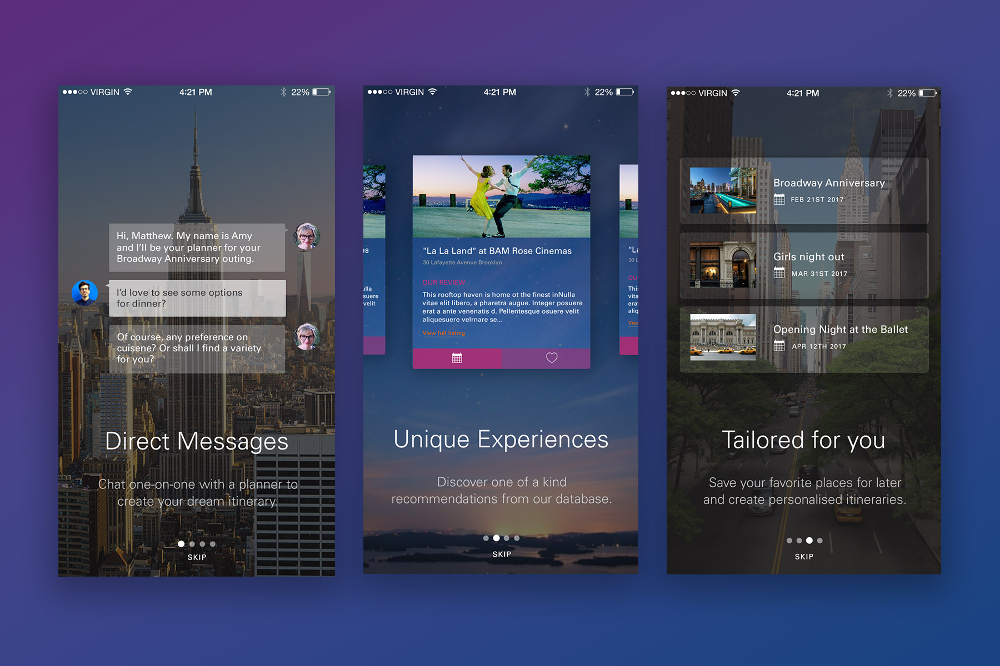

In collaboration with Modern Tribe, an all-remote multi-disciplinary agency, I helped craft the UX and UI for a complete iOS overhaul of WSWD's service. We started from the ground up by questioning and remapping each step of the user journey in order to create a more seamless experience. My role specifically involved creating a robust, modular design system which could be rolled out across multiple screens and user cases.
